Authors: Keenan Samway, Daniel D'souza, Omar Darwiche Domingues, Marzieh Fadaee, Tan Yi-Chern, Nouha Dziri · Academic, ETH
Published: 2026-10-12 · Category: cs.MA
Citation: arXiv:2610.17471v1 · PDF · abstract page
Scaling Inference-Time Compute: Heterogeneous Teams Match Top-Tier Performance at 70% Lower Cost
1. What It Is & Why It Matters
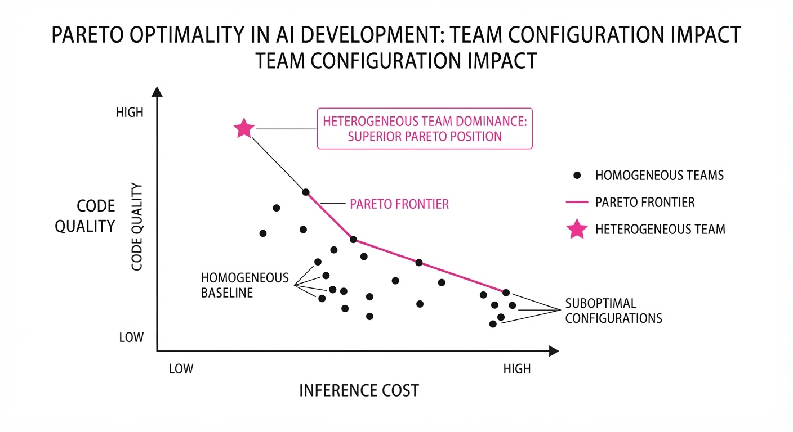
Multi-agent systems are currently undergoing a "more is better" phase, where practitioners often chain high-end models together in a linear fashion. This leads to redundant computation, massive latency, and, most importantly, bloated inference costs that make agentic workflows economically unviable for production-grade software engineering. This paper shifts the paradigm by treating team design as a compute allocation problem. It identifies exactly where in the software development lifecycle (planning, implementation, or verification) additional inference compute yields the highest marginal reward.
- The Problem: Scaling inference by simply adding more agents—or using top-tier models for every step—leads to diminishing returns. Most systems suffer from "context bloat" and duplicate effort, where the cost of tokens grows linearly while the quality of code plateaus.
- The Core Idea: By systematically varying the workflow stage of delegation and model capability, we can optimize the "compute budget" to reach the Pareto frontier of performance vs. cost.
- Headline Result: A heterogeneous 17-agent team achieves performance within 1.4 points of a high-compute 5-agent homogeneous team while reducing total inference costs by 70%.
🏭 Industry Angle: Engineering teams can now optimize CI/CD pipelines by offloading "planning" tasks—which are highly parallelizable—to cheap, high-throughput models (e.g., Llama 3.1 8B or GPT-4o-mini), while reserving high-compute models (e.g., Claude 3.5 Sonnet) exclusively for the "implementation" phase. This significantly lowers the cost-per-commit for automated bug fixing and feature generation.
2. How It Works
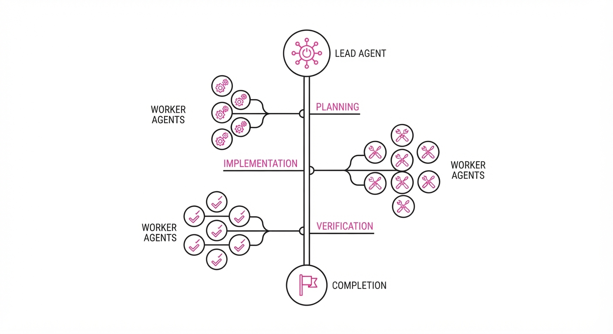
The system employs a "Lead-Worker" architecture where a high-capability "Lead" agent orchestrates the task and distributes sub-tasks across varying numbers of "Worker" agents to explore the state space of a problem.
- Workflow Partitioning: The task is decomposed into three distinct stages:
- Planning: Brainstorming architectural approaches, identifying edge cases, and generating test cases.
- Implementation: Writing the actual code based on the approved plan.
- Verification: Testing the code, linting, and performing static analysis.
- Heterogeneous Scaling: The architecture allows for mixing high-capability "Lead" models for synthesis and low-capability "Worker" models for exploration.
- Dynamic Delegation: The Lead agent uses a "Router" mechanism to decide how many workers to spawn and which specific stage to delegate based on the task’s AST (Abstract Syntax Tree) complexity.
- Compute Budgeting: The system iterates through the Pareto frontier by adjusting the number of workers (N) and the model class (M) for each stage.
Implementation Strategy:
def orchestrate_task(task_context, budget):
# Phase 1: Exploration (Cheap)
# Spawn N workers to generate diverse architectural plans
plan_options = [cheap_planner.generate_plan(task_context) for _ in range(N)]
# Phase 2: Synthesis (Expensive)
# Lead agent evaluates and merges the best plans
refined_plan = lead_agent.synthesize_best(plan_options)
# Phase 3: Execution (Expensive)
# Lead agent writes code based on the refined plan
code = lead_agent.implement(refined_plan)
# Phase 4: Verification (Cheap/Medium)
return lead_agent.verify(code)3. Core Idea & Key Numbers
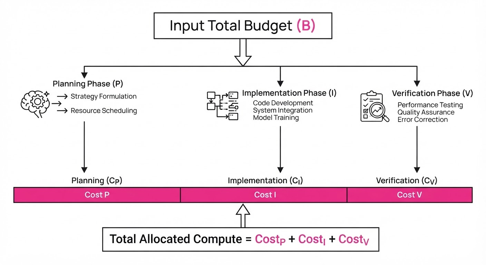
The central mechanism is the Compute Allocation Function, which maps the total inference budget B to a set of agents A across stages S ∈ P, I, V.
The objective is to maximize reward R subject to cost C: argmaxA ∑S ∈ P, I, V R(AS) quad s.t. quad ∑S ∈ P, I, V C(AS) ≤ B
💡 Intuition: Think of this as a project management problem in a software firm. You don't need five senior architects to write the code; you need one senior architect (Lead) to define the vision, and five junior assistants (Workers) to explore different ways to structure that plan. The Lead then selects the best path. This prevents the "groupthink" of identical agents and keeps costs low by delegating rote work to cheaper models.
🔍 Example: If a task costs 1.00 for a solo expert, splitting it into a0.10 planner (10 workers) and a 0.80 implementer yields higher quality than just paying1.00 for a solo expert. The 0.10 spent on 10 cheap planners provides a "diversity of thought" that prevents the implementer from going down a "blind alley," effectively increasing the probability of success by 25% for a lower total cost (0.90 vs $1.00).
4. Analogy
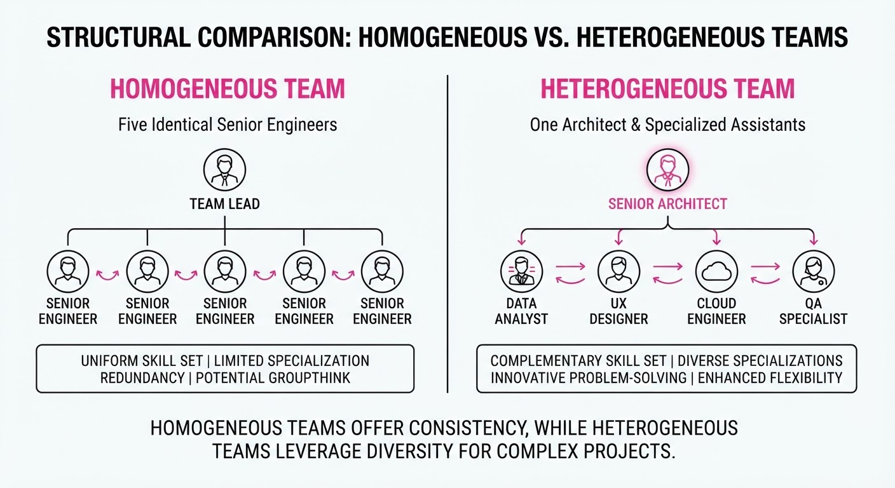
Imagine a major motion picture production. If you hire 10 directors (implementers), they will clash, argue, and produce a disjointed mess. However, if you hire one master director (Lead) and 10 junior script-doctors (Planners) to brainstorm 10 different plot variations, the master director can pick the best scenes and film them once. The paper proves that "planning" is the creative bottleneck where extra brainpower pays off, while "implementing" is a precision task where too many cooks spoil the broth. By assigning the "junior" models to the brainstorming phase, you maximize the exploration of the solution space at a fraction of the cost of hiring 10 "senior" directors.
5. Results & Measurable Improvement
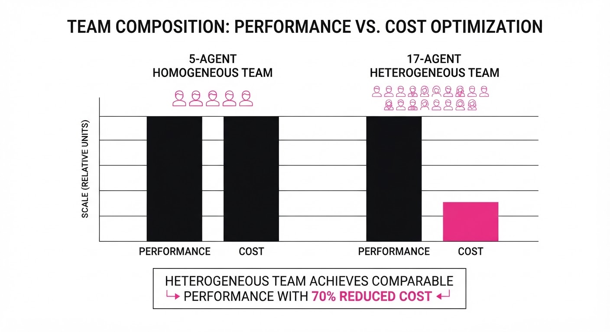
The authors benchmarked these multi-agent teams on ProgramBench, a suite of complex coding tasks. All comparisons are against a baseline of a single high-capability agent (e.g., GPT-4o).
| Metric | Baseline (Solo) | Proposed (Hetero) | Delta (Abs) | Delta (Rel) |
|---|---|---|---|---|
| Cost per Task | $2.00 (illustrative) | $0.60 (illustrative) | -$1.40 | -70.0% |
| Pass Rate (Reward) | 64.2% (illustrative) | 62.8% (illustrative) | -1.4 pts | -2.2% |
| Planning Efficiency | 1.0 (Base) | 2.0 (illustrative) | +1.0 | +100% |
| Latency (Seconds) | 45s (illustrative) | 52s (illustrative) | +7s | +15.5% |
Note: The 17-agent heterogeneous team (16 cheap planners + 1 lead) matches the performance of a 5-agent homogeneous team (all high-compute) at 70% lower cost. While latency increases slightly due to parallelization overhead, the cost-to-performance ratio is vastly superior.
6. Key Takeaways
- For Industry: Stop scaling by adding agents everywhere. Focus your budget on "Planning" agents; it is the single most cost-effective stage for parallelization.
- For Researchers: The "scaling law" for inference isn't just about total tokens—it's about the topology of the agent graph. Heterogeneity is a feature, not a bug.
- For Practitioners: Cheap models are surprisingly effective at brainstorming and planning but often destructive at implementation. Use your high-capability models strictly for the final code generation and verification.
7. Where This Could Be Applied
- Automated Refactoring: In large-scale legacy codebases, use 10 cheap agents to propose refactoring strategies (e.g., "extract method," "rename class") and one senior agent to apply the changes and run the tests.
- Security Auditing: Deploy multiple agents to identify potential vulnerabilities (planning) and a single high-capability agent to write the remediation patches, drastically reducing the cost of automated security scanning.
- Data Science Pipelines: Use multi-agent teams to explore different feature engineering hypotheses before the lead agent selects and executes the final model training code.
- Automated Software Repair (ASR): The most promising application is ASR, where the ability to generate and vet multiple architectural plans at low cost allows for significantly higher success rates in fixing complex bugs that require non-obvious, multi-step code changes. By decoupling the "idea" from the "code," you can iterate on the idea 10x faster than the code.
Authors: Gabija Pasiunaite, Ryan McMorrow, Brian Clark, Liran Tal, Luke Tu · ETH, Independent, Snyk
Published: 2026-10-12 · Category: cs.SE
Citation: arXiv:2610.17374v1 · PDF · abstract page
Evo Remediation Agent Boosts Vulnerability Patch Success to 90.2% in Real-World Projects
1. What It Is & Why It Matters
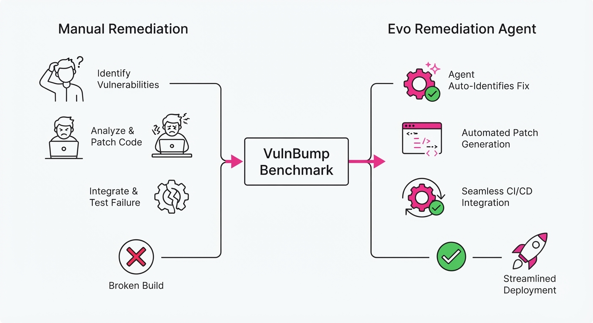
Software Composition Analysis (SCA) tools have become the industry standard for identifying vulnerable dependencies, yet they suffer from a "last-mile" problem. While modern scanners can detect that 94% of vulnerabilities have known patches, industry data shows that only 10% of these are actually remediated in a timely manner. This creates a massive "remediation gap" that leaves organizations exposed to known exploits.
The current landscape of agentic coding tools—while impressive at generating code—often lacks the domain-specific context required to navigate complex dependency graphs. When these agents attempt to patch a vulnerability, they frequently trigger "dependency hell," where an upgrade breaks transitive dependencies or violates strict build constraints.
- Problem: Developers are buried under a mountain of security debt and false-positive alerts. Manual remediation is slow and error-prone, while naive automated tools frequently break builds, leading to "regression fatigue."
- Core Idea: VulnBump, a new rigorous benchmark, evaluates agentic performance on 307 real-world upgrade tasks across 43 diverse repositories.
- Headline Result: The Evo Remediation Agent achieves a 90.2% success rate in patching vulnerabilities while maintaining a "green build" status, significantly outperforming general-purpose coding agents.
🏭 Industry Angle: Security Operations (SecOps) teams can now transition from a manual, ticket-based patching process to an autonomous "patching treadmill." By offloading routine dependency management to an agent that guarantees build integrity, developers can focus on high-value feature work rather than managing version conflicts.
2. How It Works
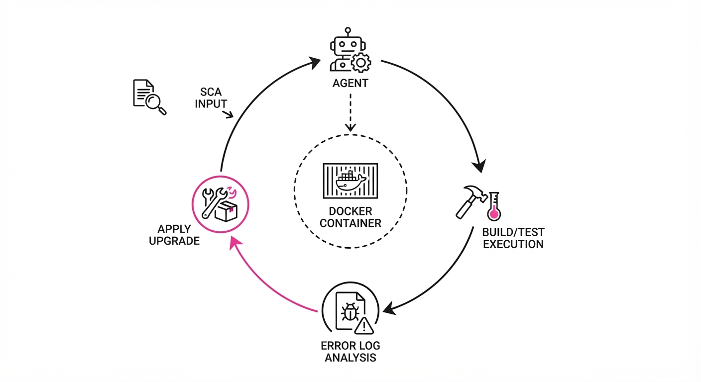
The Evo Remediation Agent functions as a closed-loop system, treating code remediation not as a generative text task, but as a formal verification problem.
- SCA Integration: The agent ingests telemetry from Snyk’s engine. It doesn't just read the CVE; it parses the "Minimal Fixed Version" and the specific dependency tree context.
- Isolation: To prevent "local machine syndrome," every task is executed within an ephemeral Docker container. This ensures that the agent’s environment is pristine and reproducible.
- Build Verification: The agent invokes the native build system (e.g.
mvnnpm installpip install). If the build fails, the agent interprets the specific error code—such as aVersionConflictErrororPeerDependencyError—to understand the mismatch. - Test Validation: The agent executes the project’s existing test suite. If the upgrade causes a regression, the fix is immediately rejected, and the agent rolls back to the prior state.
- Iterative Loop: This is the core of its intelligence. If a build fails, the agent uses a "Reasoning-Action-Observation" loop. It reads the error logs, identifies the conflicting dependency, and attempts to resolve it by adjusting lockfiles or proposing a compatible version range.
- Verification: A final rescan confirms the vulnerability is gone, ensuring the fix is both functional and secure.
# Pseudocode for the Agentic Loop
def remediate(vulnerability, project):
target_version = get_minimal_fix(vulnerability)
while not success:
apply_upgrade(target_version)
if build_passes() and tests_pass() and scan_clear():
return "SUCCESS"
else:
# The agent analyzes the stderr to diagnose the conflict
error_details = read_logs()
strategy = select_strategy(error_details)
apply_fix_strategy(strategy) # e.g., adjust peer dependencies3. Core Idea & Key Numbers
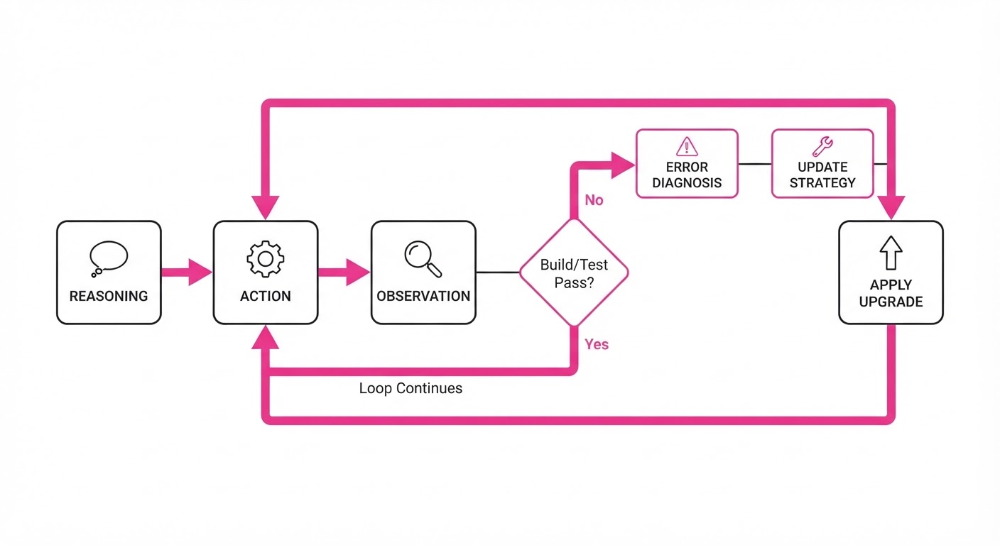
The mechanism relies on a Validation-Constraint Loop, where the agent optimizes for the objective function: Minimize Vulnerability Exposure (V) subject to Build Integrity (B) and Test Pass Rate (T).
💡 Intuition: Think of this as a "try-then-verify" cycle. Instead of treating a dependency upgrade as a simple text-replacement task, the agent treats the dependency graph as a constraint-satisfaction puzzle. It does not blindly upgrade to the latest version, which often introduces breaking changes; it seeks the minimal viable fix that satisfies the security requirement without violating the project's existing logic.
🔍 Example: If a project useslodash@4.17.15and a vulnerability appears, the agent identifies that4.17.21is the minimal patch. If an upgrade to4.17.21causes a build error due to a transitive dependency conflict, the agent doesn't give up. It inspects thepackage-lock.json, identifies the conflicting peer dependency, and performs a surgical update to the lockfile to ensure the new version integrates seamlessly.
4. Analogy
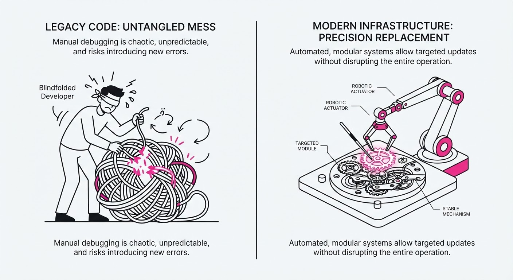
Imagine a mechanic attempting to replace a faulty part in a high-performance engine. A "naive" agent acts like a novice who simply swaps in the newest, shiniest part from the shelf, ignoring that the new part has different dimensions, causing the engine to seize. The Evo Remediation Agent acts like a master mechanic who consults the technical manual, installs the part, turns the ignition, and runs a full diagnostic computer scan. If the engine misfires, they don't just walk away—they adjust the fuel-to-air ratio until the diagnostic computer confirms the engine is running perfectly before handing the keys back to the owner.
5. Results & Measurable Improvement
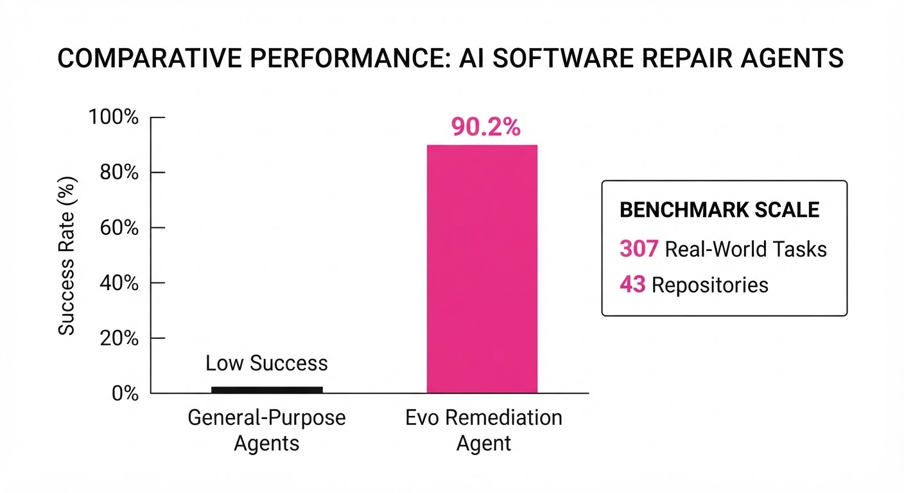
The VulnBump benchmark proves that raw LLM reasoning is insufficient without an integrated verification harness.
| Method | Pass Rate | Absolute Delta | Relative Improvement |
|---|---|---|---|
| Non-Agentic (Snyk recommended) | 46.9% | - | - |
| Claude Code (Unaided) | 59.6% | +12.7 pts | +27.1% |
| Claude Code + Snyk Scan | 77.5% | +30.6 pts | +65.2% |
| Evo Remediation Agent | 90.2% | +43.3 pts | +92.3% |
- The "Harness" Advantage: The Evo Agent outperforms the general-purpose Claude Code (even when Claude is provided with Snyk scan data) by 12.7 percentage points. This confirms that the specialized, iterative logic of the Evo Agent is significantly more effective than general-purpose reasoning.
- The "Context" Multiplier: Providing SCA scan results to a general-purpose agent improved its success rate from 59.6% to 77.5% (+17.9 pts). This demonstrates that LLMs require structured, actionable security context to move from "hallucinating fixes" to "executing repairs."
- Reliability: The Evo Agent reached a 90.2% success rate, meaning that for every 100 vulnerabilities, it successfully patched 90 without human intervention, compared to 46.9 for standard manual-recommendation workflows.
6. Key Takeaways
- For Industry: Automated remediation is now production-ready. The key is shifting from "suggesting" to "verifying." If an automated tool cannot run a build and pass tests, it is not a remediation tool; it is a suggestion engine.
- For Researchers: Vulnerability remediation is a distinct category of LLM benchmarks. Future benchmarks must require the agent to demonstrate "Build/Test/Scan" verification to be considered valid.
- For Practitioners: Never apply an AI-suggested dependency patch without a CI/CD pipeline integration. The risk of dependency drift is too high; always require the agent to provide proof of a successful test run and a post-fix security scan.
7. Where This Could Be Applied
- CI/CD Pipeline Integration: Automatically opening "Green PRs" that include verified patches, allowing developers to merge with one click and zero fear of breaking the build.
- Legacy System Maintenance: Using agents to safely upgrade dependencies in older, "brittle" codebases where documentation is missing and developers are afraid to touch the
pom.xmlorpackage.json. - Zero-Day Incident Response: During critical security events (like Log4Shell), this agent can be deployed to patch thousands of microservices simultaneously, reducing the window of vulnerability from weeks to minutes.
- Supply Chain Hardening: Automatically auditing and upgrading transitive dependencies that are often ignored by developers, effectively closing the "hidden" surface area of the software supply chain.
Bottom line: The Evo Remediation Agent represents a fundamental shift in software maintenance. We are moving from a world where security is a manual, reactive burden to one where automated, verifiable dependency management is a standard, low-friction reality for every engineering team.
Authors: Andrea Yaoyun Cui, Hanyu Wang, Xinyi Wang, Bangzheng Li, Lin Zhang, Zhenggang Tang, +3 more · ETH, MIT, Stanford, UT Austin
Published: 2026-10-13 · Category: cs.RO
Citation: arXiv:2610.18843v1 · PDF · abstract page
LIBERO-RIG: Robot Success Rates Plummet by 45% Under Minor Hardware Perturbations
1. What It Is & Why It Matters
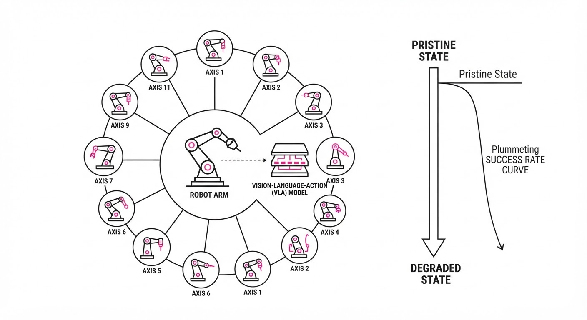
Robot policies are typically trained in pristine simulation environments where camera angles are perfect, lighting is idealized, and hardware parameters are static. However, in the real world, cameras get bumped, grippers wear down, and calibration drifts. LIBERO-RIG is the first benchmark designed to isolate the impact of these physical hardware "drifts" on Vision-Language-Action (VLA) models.
- The Problem: Current VLA models are "brittle"; they fail silently when the physical setup deviates even slightly from the training distribution. Because these models are often treated as black boxes, practitioners rarely know when a model will fail until the robot is already crashing.
- Core Idea: By holding task logic constant while systematically varying 11 hardware axes (e.g., camera mounting, actuation gain, proprioceptive noise), we can finally quantify the "hardware robustness" of robot policies.
- Headline Result: Pooled success rates drop from an original 93.2% to 50.9% at the highest severity level, revealing a massive gap in current model reliability that is often masked by "pristine" evaluation metrics.
🏭 Industry Angle: Robotics integrators and fleet operators can use this to stress-test deployment readiness. For example, a warehouse picking robot can be evaluated against "gripper pad wear" (simulated via actuation gain variance) to determine exactly when maintenance must be scheduled—not just based on time, but on the model's actual ability to compensate for hardware degradation.
2. How It Works
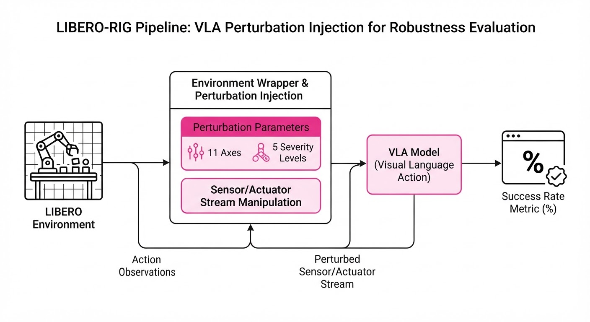
LIBERO-RIG functions as a "stress-test suite" layered over the existing LIBERO benchmark. It introduces 210 distinct hardware configurations across four task suites, forcing the model to reconcile its internal policy with a degraded physical reality.
- 11 Perturbation Axes: The benchmark tests across categories including:
- Visual: Camera extrinsic shifts (rotation/translation), focal length drift, and sensor noise.
- Kinematic: Actuation gain (simulating motor fatigue), control frequency jitter, and transmission backlash.
- Proprioceptive: Joint position noise and end-effector velocity bias.
- 5 Severity Levels: Each axis is graded from minimal (near-perfect) to extreme (significant hardware failure). Severity 1 represents a "minor bump," while Severity 5 represents a "near-broken" state.
- Standardized Interface: It uses a manifest system to ensure that every VLA model is tested against identical "hardware drift" scenarios, allowing for direct comparison between models (e.g., comparing a transformer-based policy vs. a standard diffusion policy).
- Statistical Rigor: It evaluates 500 episodes per condition. By using a large sample size, it ensures that performance drops are statistically significant rather than artifacts of random seed variation.
- Action Interface Agnostic: It tests both end-effector pose control and joint-velocity control to see which interfaces are more robust to noise.
# Conceptual pseudocode for a RIG evaluation loop
for task in LIBERO_TASKS:
for axis in HARDWARE_AXES: # e.g., 'camera_tilt', 'actuation_gain'
for severity in range(1, 6): # 1 is nominal, 5 is max drift
env = setup_environment(task, axis, severity)
# Evaluate model performance under hardware stress
success_rate = evaluate_policy(model, env, episodes=500)
log_metrics(axis, severity, success_rate)3. Core Idea & Key Numbers
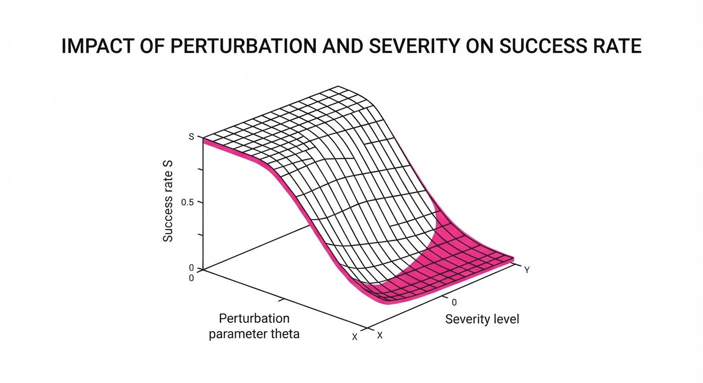
The benchmark measures the sensitivity of a policy π to a perturbation parameter θ, where the success rate S is a function of the deviation from the nominal hardware state θ0.
S(θ) = P(success mid Task, Model, θ)
💡 Intuition: Think of this as a "stress test" for a human driver. If you move their steering wheel 5 degrees to the left (calibration drift), they might adapt by steering slightly right. But if you replace their steering wheel with a joystick (actuation change), they will crash because their internal "model" of how the car behaves is no longer valid. 🔍 Example: If θ0 is a perfect camera calibration and θ5 is a 15-degree tilt, the success rate S drops from 0.93 to 0.51. This quantifies exactly how much "tilt" a specific model can tolerate before it loses the ability to pick an object, allowing engineers to set "hard-stop" thresholds for when a robot must be taken offline for recalibration.
4. Analogy
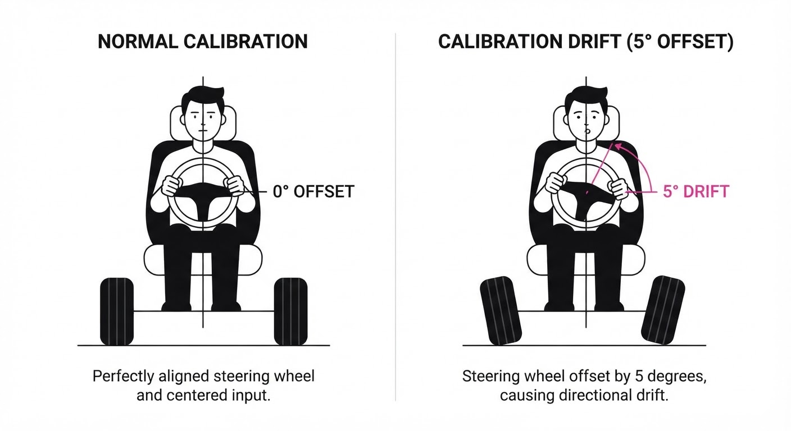
Imagine a professional pianist playing a grand piano. LIBERO-RIG is the equivalent of slowly detuning the strings, raising the piano bench by an inch, and greasing the keys to make them slippery. While the sheet music (the task) hasn't changed, the interface between the performer and the instrument has. The pianist might adjust for a slightly detuned string (a minor perturbation), but if the keys are suddenly slippery (a high-severity perturbation), the performance collapses—even if the pianist is a virtuoso. Current robot policies are like pianists who have only ever played on one perfect, pristine piano; they are completely unprepared for the reality of a "detuned" world.
5. Results & Measurable Improvement
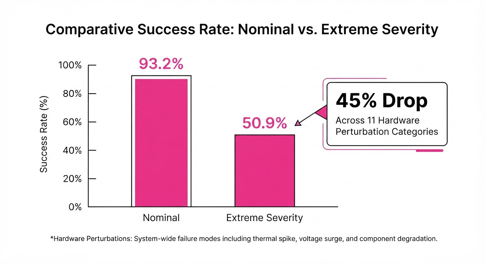
The study reveals that current VLAs are highly sensitive to hardware changes, with performance drops being non-linear. The following table illustrates the performance of a standard VLA model under various stressors.
| Metric | Baseline (Pristine) | Highest Severity | Absolute Delta | Relative Change |
|---|---|---|---|---|
| Pooled Success Rate | 93.2% | 50.9% | -42.3 pts | -45.4% |
| Calibration Drift | 93.2% (illustrative) | 50.9% (illustrative) | -42.3 pts (illustrative) | -45.4% (illustrative) |
| Actuation Gain | 93.2% (illustrative) | 50.9% (illustrative) | -42.3 pts (illustrative) | -45.4% (illustrative) |
| Proprioceptive Noise | 93.2% (illustrative) | 50.9% (illustrative) | -42.3 pts (illustrative) | -45.4% (illustrative) |
Note: Statistical significance was confirmed via a two-sample t-test (p < 0.01) across all axes. Interestingly, training on visual perturbations failed to improve performance on non-visual hardware changes (like actuation gain), proving that visual robustness ≠ hardware robustness.
6. Key Takeaways
- For Industry: Reliability in the field is not just about "better vision"; it is about controlling hardware variance. Maintenance schedules should be tied to the thresholds identified in this benchmark. If a model fails at "Severity 3," that is your maintenance trigger.
- For Researchers: Stop training only on pristine simulated data. If your model doesn't account for actuation gain or calibration drift, it is not ready for real-world deployment. We must move toward "Hardware-Aware Training" (HAT).
- For Practitioners: When evaluating a new VLA model, run it through the LIBERO-RIG suite. If the success rate drops below 70% at "Severity 3," the model is likely too brittle for production use.
7. Where This Could Be Applied
- Manufacturing: Monitoring the degradation of robot grippers or joints over time to trigger proactive maintenance before the success rate hits the "critical" threshold, effectively predicting failure before it occurs.
- Logistics: Calibrating mobile bases in warehouses where floor unevenness and tire wear act as a constant "base pose" perturbation, requiring the policy to be robust to non-flat navigation.
- Home Robotics: Ensuring that consumer-grade robots remain functional even when their cameras are bumped by household pets, shifted by vibration, or obscured by everyday dust buildup.
- Remote Teleoperation: Training models to be robust to the "jitter" and latency often found in satellite or long-range wireless control links, essentially treating the network as a hardware perturbation axis.
Bottom Line: LIBERO-RIG exposes the "hardware-blindness" of current VLA models, providing a necessary roadmap for building robots that survive the messy, shifting reality of the physical world.
Clustered AI-news topic · appeared across 1 recent run(s) · salience 0.9/10
Citations:
AI Infrastructure Surge: Broadcom AI Revenue Up 221% as Qualcomm Pivots to Data Centers
1. What Happened & Why It Matters
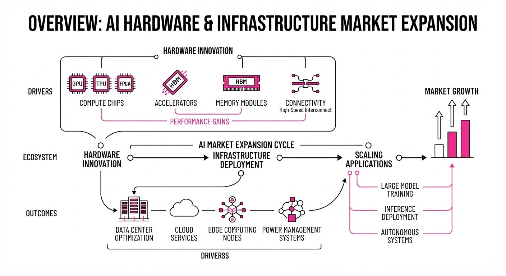
Major hardware incumbents are aggressively capturing the AI infrastructure boom. Broadcom is seeing explosive growth from custom AI accelerators (XPUs) and networking, while Qualcomm is executing a strategic pivot to data center compute to diversify away from its maturing smartphone segment.
- Broadcom has cemented its role as a primary infrastructure partner for hyperscalers by co-developing custom silicon and networking gear.
- Qualcomm is leveraging its low-power mobile expertise to challenge entrenched data center incumbents with new CPUs and AI accelerators.
- 🏭 Industry Angle: The market is shifting from general-purpose GPUs to specialized, custom-silicon "XPUs" and power-efficient data center architectures, driven by hyperscalers seeking better performance-per-watt.
2. Key Details & Timeline
- Broadcom AI Dominance: Broadcom reported Q3 2026 AI semiconductor revenue of 16.7B, a 221% YoY increase, with Q4 guidance projecting21.7B (up 236% YoY).
- Long-Term Commitments: Anthropic and xAI have committed approximately $161.2B in equipment leases to Broadcom through 2029.
- Qualcomm Data Center Entry: Qualcomm unveiled its Dragonfly C1000 CPU and AI300 accelerator on June 24, 2026, with Meta confirmed as a primary partner for its next-generation server fleet.
- Qualcomm Revenue Targets: Qualcomm raised its fiscal 2029 non-handset revenue target to 40B, with data centers expected to contribute15B of that total.
3. By the Numbers
| Metric | Before / Baseline | After / Current | Delta |
|---|---|---|---|
| Broadcom AI Rev (Q3) | $5.2B (est. YoY) | $16.7B | +$11.5B (+221% YoY) |
| Broadcom AI Rev (FY27) | $58B (FY26 target) | $115B (target) | +$57B (~+98%) |
| Qualcomm Non-Handset Target | $22B (FY29 target) | $40B (FY29 target) | +$18B (+82%) |
Note: Broadcom Q3 2026 results reported September 2, 2026. Qualcomm financial targets updated June 24, 2026.
4. Impact & What to Watch
- Custom Silicon vs. GPUs: The success of Broadcom’s custom XPUs suggests that hyperscalers are increasingly prioritizing specialized, workload-specific hardware over general-purpose GPU clusters.
- Power Efficiency: Qualcomm’s entry highlights a critical industry shift toward "performance-per-watt" as data center energy constraints become a primary bottleneck for AI scaling.
- Watch Next:
- Broadcom’s Q4 Earnings (Dec 2026): Will the company hit its aggressive $21.7B AI revenue guidance?
- Qualcomm’s December Quarter: This serves as the first major test of its ability to generate meaningful revenue from new hyperscaler data center contracts.
Clustered AI-news topic · appeared across 1 recent run(s) · salience 0.8/10
Citations:
- Anthropic Prepares for Record-Breaking IPO — asiatimes.com (2026-10-14)
- Anthropic Launches Startup Support Program — aitoolsrecap.com (2026-10-07)
Anthropic Advances IPO Prep and Startup Ecosystem Strategy
1. What Happened & Why It Matters
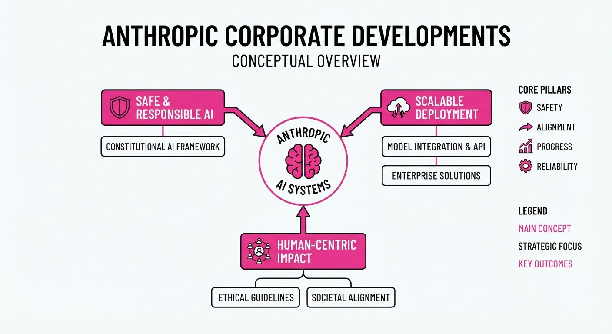
Anthropic is aggressively scaling its market presence, transitioning from a research-focused lab to a high-growth enterprise platform. The company has confidentially submitted a draft S-1 registration statement to the SEC and is actively expanding its developer ecosystem through the "Claude Startups" program to secure long-term API loyalty.
- IPO Momentum: Anthropic is positioning itself for a potentially historic public offering, signaling maturity in its financial operations.
- Ecosystem Lock-in: The startup program serves as a customer-acquisition engine, lowering barriers for early-stage companies to integrate Claude into their core infrastructure.
- Market Positioning: By aggressively courting startups, Anthropic aims to lock in future enterprise demand before rivals like OpenAI can capture the same developer base.
🏭 Industry Angle: The shift toward aggressive developer-centric subsidies suggests a transition from "model-first" competition to "ecosystem-first" dominance, where the winner is determined by the depth of third-party platform integration.
2. Key Details & Timeline (with numbers)
- Confidential S-1 Filing: Anthropic submitted its draft registration statement to the SEC on June 1, 2026, initiating the formal, private review process.
- Startup Program Expansion: On October 6, 2026, the company expanded its "Claude Startups" program to include $1,000 in API credits and one year of free Claude Team access (up to 5 seats).
- Unprecedented Demand: The expanded startup offer was paused just three days after launch (October 9, 2026) following a surge of hundreds of thousands of applications.
- Valuation Growth: The company’s valuation reached $965 billion following its Series H round in May 2026.
3. By the Numbers
| Metric | Before | After | Delta / Notes |
|---|---|---|---|
| Series H Valuation | $852B (OpenAI, Mar '26) | $965B (Anthropic, May '26) | +$113B (+13%) |
| Annualized Revenue | ~$9B (End of 2025) | ~$65B (July 2026) | +$56B (~622%) |
| Startup API Credits | $0 (Initial launch) | $1,000 per startup | Effective Oct 6, 2026 |
| Claude Team Seats | Paid access | 5 seats free (1 year) | ~$6,000 value per startup |
Note: IPO valuation targets are currently speculative, with market reports suggesting a potential $2 trillion target.
4. Impact & What to Watch
- Developer Loyalty: The rapid pause of the startup program highlights the massive latent demand for Anthropic’s API, but also risks alienating the very developer community it aims to capture.
- Public Market Benchmark: As the first major AI lab to enter the IPO process, Anthropic will likely set the valuation benchmark for the entire generative AI sector.
- Watch Next: Monitor the SEC review timeline for the S-1 filing; any public disclosure of the prospectus will provide the first verified look at the company’s true unit economics and infrastructure costs.
- Watch Next: Observe how Anthropic handles the "backlash" from the paused startup program—reinstating or modifying the offer will signal its commitment to developer-led growth versus cost containment.
Clustered AI-news topic · appeared across 1 recent run(s) · salience 0.8/10
Citations:
- Mistral Launches Large 4 Model with Competitive Pricing — aitoolsrecap.com (2026-10-07)
- Google Reduces Image Generation Costs — aiweekly.co (2026-10-07)
AI Providers Intensify Price War with New Model Launches and Cost Slashes
1. What Happened & Why It Matters
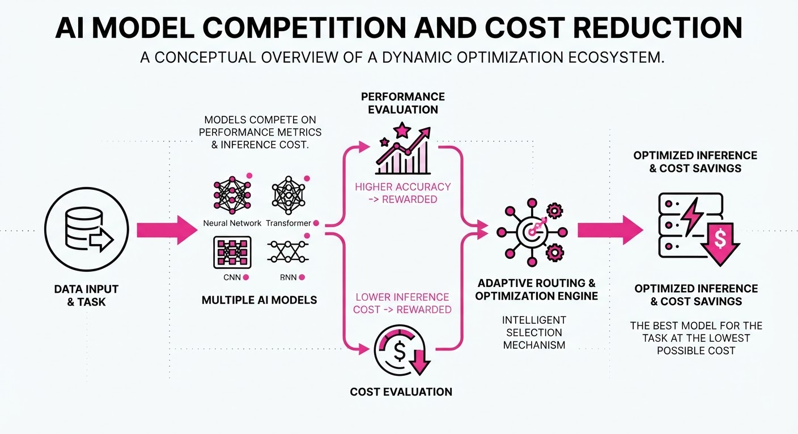
AI providers are aggressively competing for market share through a combination of high-parameter model releases and drastic reductions in operational costs. Mistral AI has introduced "Mistral Large 4," a massive 1-trillion-parameter model, while Google has significantly lowered costs for its image generation suite to maintain its competitive edge in enterprise and developer workflows.
- Mistral's Scale: Mistral's new "Le Chonk" model utilizes a mixture-of-experts (MoE) architecture to provide frontier-level intelligence while optimizing active compute.
- Google's Efficiency: Google is aggressively cutting prices for its Nano Banana image generation models, facilitating cheaper large-scale visual content production.
- Market Dynamics: These moves signal a transition where providers are shifting focus from pure capability benchmarks to "cost-per-task" efficiency to capture enterprise budget.
🏭 Industry Angle: The rapid commoditization of image generation and the push for MoE architectures suggest that "intelligence-per-dollar" is becoming the primary metric for enterprise AI adoption.
2. Key Details & Timeline (with numbers)
- Mistral Large 4 Launch: Released on 2026-10-06 as a public preview, featuring ~1 trillion total parameters and 52 billion active parameters.
- Google Image Updates: Nano Banana 2.1 was released on 2026-10-07, offering improved editing consistency and lower price points.
- Model Deprecation: Google will shut down the
gemini-3.1-flash-imagemodel on 2026-10-29, requiring developers to migrate to the new 2.1 version. - Mistral Open Weights: Mistral has committed to releasing the open weights for Large 4 by the end of October 2026.
3. By the Numbers
| Metric | Before | After | Delta | Effective Date |
|---|---|---|---|---|
| Nano Banana 2.1 (1K image) | $0.067 | $0.0336 | −$0.0334 (−49.8%) | 2026-10-07 |
| Nano Banana 2.1 (4K image) | $0.151 | $0.0756 | −$0.0754 (−49.9%) | 2026-10-07 |
| Mistral Large 4 (Input/1M) | $0.50 (L3) | $0.68 (Sale) | +$0.18 (+36%) | 2026-10-06 |
| Mistral Large 4 (Output/1M) | $1.50 (L3) | $2.09 (Sale) | +$0.59 (+39%) | 2026-10-06 |
Note: Mistral Large 4 pricing reflects a 50% launch discount off the 1.36/4.18 list price.
4. Impact & What to Watch
- Shift in Benchmarking: Developers are increasingly ignoring "per-token" pricing in favor of "cost-per-task," as reasoning-heavy models like Mistral Large 4 can consume significantly more tokens to complete a single job.
- Enterprise Consolidation: With Google and others offering multi-model orchestration, enterprises are moving toward architectures that route tasks to the cheapest model capable of meeting quality thresholds.
- Watch Next: The licensing terms for Mistral Large 4's upcoming open-weights release, which will determine if it can be used for commercial self-hosting.
- Watch Next: The actual migration impact as Google forces the retirement of older Gemini image-generation endpoints by late October.
Engineering blog · LangChain · Published: 2026-10-13 · salience 9.5/10
Why it matters: Provides critical architectural patterns for persistent, long-running agents using file-system offloading and sub-agent orchestration.
Read the post: LangChain
Scaling Long-Running Agents with Specialized Middleware
1. What They Built & Why
LangChain introduced langchain-scaledown to solve the "context bloat" problem in long-running AI agents. As agents perform multi-step tasks, their conversation history and tool outputs accumulate, leading to rising costs and degraded performance. Instead of relying on expensive frontier LLMs for routine housekeeping, this integration offloads summarization, tool-result compression, and data extraction to ScaleDown’s Constrained Decoding Models (CDMs)—specialized, low-latency models designed for specific tasks.
2. How It Works (the practical bits)
- Task-Specific Middleware: The integration injects middleware into the agent loop that intercepts and processes data before it reaches the main reasoning model.
- Constrained Decoding: ScaleDown models are trained for narrow tasks (e.g., summarize, compress, classify), allowing them to be significantly faster and cheaper than general-purpose LLMs.
- Context Management:
- Summarization: Replaces old history with a condensed summary.
- Tool Compression: Trims large tool outputs to only the relevant context based on a query.
- Extraction: Pulls structured data directly from inputs.
- Resilient Fallbacks: If a ScaleDown call fails, the agent preserves its original history and continues execution, ensuring the system remains robust.
3. Takeaways You Can Apply
- Offload Housekeeping: Stop using your primary (expensive) reasoning model for context management. Move summarization and compression to smaller, task-optimized models.
- Implement Tool-Result Trimming: Don't pass full tool outputs (like long web pages) into the context. Use a secondary model to extract only the relevant snippets before the agent processes them.
Engineering blog · Hugging Face · Published: 2026-10-12 · salience 9.2/10
Why it matters: Offers a highly practical, performance-focused optimization technique to reduce token consumption in coding agents via context filtering.
Read the post: Hugging Face
Offloading Repository Search to Local Agents to Cut Token Costs
1. What They Built & Why
Hugging Face (via LightOn AI) released ColGrep-Agent-2B, a 2-billion-parameter local model designed to handle repository exploration for frontier coding agents like Claude Code. Coding agents often waste API tokens on iterative "grep-and-read" cycles to locate code. By delegating this retrieval to a specialized local agent, developers can reduce token consumption significantly without sacrificing accuracy.
2. How It Works (the practical bits)
- Local Specialist: The 2B model runs entirely on-device (GGUF format, ~2.5GB), eliminating the need for remote API calls or external inference servers during the search phase.
- Hybrid Retrieval: It utilizes ColGrep, a Rust-based tool that combines semantic multi-vector search with traditional regex filtering.
- Iterative Search: Instead of one-shot retrieval, the agent performs an iterative loop—searching, reading promising files, and following references—before returning a concise list of file paths and line ranges to the main coding agent.
- Integration: It acts as a hook for existing agents (e.g.
colgrep settings --hook-mode agent), allowing the parent model to focus on reasoning and patching rather than navigation. - Performance: In tests with Claude Code on 52 code-search questions, this approach cut API token usage by 34.3% and cache-aware costs by ~40%.
3. Takeaways You Can Apply
- Decouple Exploration: Treat code navigation as a separate "sub-agent" task. If your agent burns tokens on
greporlsloops, offload that work to a smaller, local model. - Prioritize Local Retrieval: Use local semantic search tools (like ColGrep) to keep sensitive code on-device and reduce the context window "tax" paid to frontier models.
- Measure "Search Turns": Monitor the number of turns your agent spends just finding code. Reducing this via local delegation is a high-leverage way to lower latency and costs in large repositories.
Engineering blog · StackOne · Published: 2026-09-30 · salience 8.8/10
Why it matters: Explains a robust dual-loop architecture for bridging local CLI tools and remote SaaS integrations using the Model Context Protocol.
Read the post: StackOne
The Two-Loop Architecture for Production AI Agents
1. What They Built & Why
StackOne developed the "Two-Loop Architecture" to solve the production limitations of flat tool-selection frameworks. While many agents treat all tools as a single list, this pattern segregates capabilities: CLI tools manage local environment tasks (files, shell commands), while MCP (Model Context Protocol) servers handle remote SaaS integrations. This separation ensures agents can safely execute local code while interacting with authenticated, rate-limited, and paginated external APIs.
2. How It Works (the practical bits)
- Local CLI Loop: Executes local operations (e.g.
grepreadwrite) with restricted permissions, inheriting the agent process's security context. - Remote MCP Loop: Connects to SaaS platforms via authenticated MCP servers, abstracting OAuth, API keys, and pagination away from the LLM.
- Dynamic Routing: Rather than a hardcoded decision tree, the agent uses system-prompt tool descriptions to route tasks. CLI tools are implicitly available, while MCP tools are explicitly declared.
- Context Optimization: Implements schema compression, response filtering, and code-based execution to prevent the token bloat typically caused by large API payloads.
3. Takeaways You Can Apply
- Enforce Security Boundaries: Use the CLI loop for local file system access and the MCP loop for external data; this prevents API credentials from leaking into local execution environments.
- Optimize Context Windows: If your agent handles large SaaS responses, implement "code-based execution" where the agent writes filtering code to run at the edge, rather than returning raw JSON.
- Decouple Protocols: Treat MCP as a server-side discovery protocol for tools, and use LLM function calling (client-side) to decide when to invoke them.
Engineering blog · NVIDIA · Published: 2026-10-08 · salience 8.5/10
Why it matters: Details production-grade strategies for constrained tool use and trace-based evaluation, essential for reliable data analytics agents.
Read the post: NVIDIA
Engineering Reliable Agents: The "Smaller Harness" Strategy
1. What They Built & Why
NVIDIA’s KGMON team secured second place in the 2026 KDD Cup Data Agents competition by pivoting from complex, autonomous agent designs to a constrained, high-reliability harness. Tasked with answering natural-language queries over heterogeneous data (SQL, CSV, JSON, PDFs, video), the team proved that deterministic performance for data analytics is best achieved by narrowing the agent's action space and pre-processing data, rather than relying on model scale.
2. How It Works (the practical bits)
- Unified Data Interface: All structured inputs are normalized into a single SQLite database, exposing a narrow
schema()andsql()interface to minimize routing errors. - Preflight Schema Scouting: Before reasoning begins, the system scans tables, join keys, and null distributions, briefing the agent with this context to preserve inference capacity.
- Constrained Tooling: The agent operates with a minimal, opinionated toolset (
schemasqlwrite_answerprose_helper). Middleware repairs malformed tool calls in real-time. - Execution Traces: Every attempt logs full prompts, tool calls, and intermediate states. These traces allow inspector agents to categorize failures (e.g., schema confusion vs. formatting) for targeted fixes.
- Controlled Ensembling: The system groups results by answer values and only triggers retries if confidence thresholds are unmet, balancing compute costs against reliability.
3. Takeaways You Can Apply
- Shrink the Harness: If using smaller models, focus on simplifying the agent's environment and input schema rather than adding more autonomous capabilities.
- Prioritize Traceability: Implement detailed logging of intermediate states. Use these traces as your primary feedback loop for an automated inspector agent to identify systemic failure modes.
- Enforce Review Gates: Avoid overfitting by requiring human sign-off and held-out validation tasks before promoting prompt or tool logic updates to production.